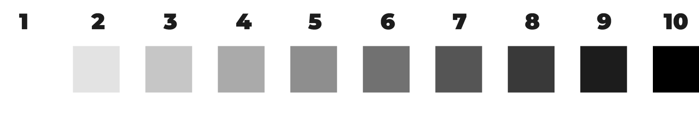
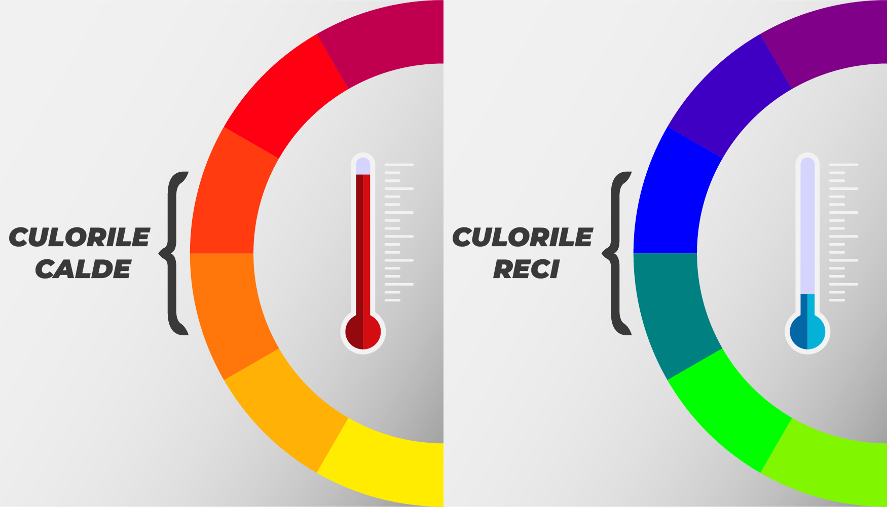
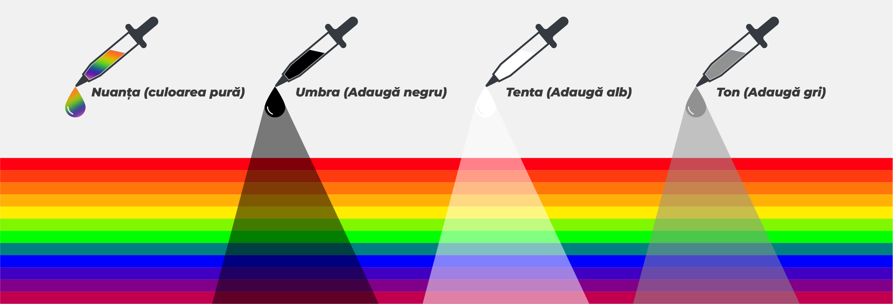

Ce sunt nonculorile?
Nonculorile sau culorile acromatice (albul si negrul) nu se pot gasi in natura in forma pura. Combinatia dintre alb si negru, in orice cantitate, se numeste gri. Ele se pot adauga in orice combinatie cromatica, deoarece sunt compatibile cu toate culorile.
Culori calde si culori reci
Cum iti dai seama care sunt culorile calde? Daca desenezi o linie prin centrul cercului cromatic vei separa astfel culorile calde (rosu, galben portocaliu) de culorile reci (albastru, verde si violet). Culorile calde sunt asociate adesea cu energie, lumina, caldura si actiune, pe cand culorile reci sunt asociate cu liniste, calmitate, pace si serenitate. Temperatura culorilor este un element important in alegerea si obtinerea culorilor.
Ce sunt nuantele de culori?
Nuanța (Hue) unei culori reprezintă familia generală de culori din care apaține respectiva culoare. De asemenea, fiecare culoare poate avea diferite nuanțe, toate acestea obținându-se prin modificarea tentei (Tint), umbrei (Shade) sau a tonului (Tone).
Sheme de culori
Schema culorilor monocromatice
Schemele de culori monocromatice folosesc o singură nuanță de bază și extind schema de culori folosind diferite umbre, tente și tonuri ale acelei familii de culori.
Tonurile calde tind să energizeze și să revigoreze, dar pot fi copleșitoare sau stresante de privit, în funcție de modul în care sunt utilizate.
Tonurile reci tind să fie liniștitoare și relaxante, dar se pot simți plate și lipsite de viață dacă sunt utilizate incorect.
Schema analoagă
O schemă analogă folosește trei culori adiacente pe roată. Una dintre ele este de obicei o culoare primară (roșu, galben sau albastru). Acest stil are mult mai puțin contrast decât celelalte, deoarece culorile pe care le folosește sunt atât de apropiate. Cand sunt combinate într-o lucrare, culorile crează o stare de relaxare si liniște.
Mulți designeri aplică regula 60-30-10, care este folosită pentru a asigura o atmsoferă pașnică, atrăgătore din punct de vedere vizual. Conform acestei reguli, 60% din spațiul tău va fi culoarea de bază, 30% va fi culoarea ta de accent și 10% va fi ultima culoare.
Schema culorilor complementare
Din cercul culorilor complementare fac parte culorile diametral opuse ale cercului cromatic. Cand sunt asezate una langa alta, culorile se evidentiaza reciproc si creaza un efect contrastant si vibrant, deosebit de puternic. Exemple de culori complementare includ roșu cu verde, albastru cu galben și portocaliu cu violet.
Pentru a introduce o a treia culoare și pentru a face schema de culori mai puțin intensă, puteți utiliza o schemă de culori complementară divizată. Folosește o culoare ca bază și două culori adiacente complementului său.
Schema culorilor complementare divizate
Schema culorilor complementare divizate folosește două culori care sunt aproape de vecini și una care este opusă celor două, cum ar fi roșu, verde și albastru deschis.
Culorile complementare divizate funcționează bine și atunci când vine vorba de pattern-uri, pentru a crea un model care iese în evidență cu îndrăzneală. Această schemă de culori ar putea funcționa excepțional de bine atunci când vine vorba de lucrări de artă, indiferent de o piesă portret sau peisaj, utilizarea atentă a culorilor divizate-complementare poate adăuga cantitatea potrivită de contrast de care aveți nevoie pentru a aduce mai multă viață lucrării dvs.
Schema triadică
Culorile triadice sunt culorile plasate la distanțe egale în interiorul cercului cromatic, cele care, odată alese, formează un triunghi echivalent, cum ar fi portocaliu, violet și verde. Efectul obtinuț va fi unul vibrant, chiar și în cazul în care culorile au o saturație redusă. Crearea echilibrului este crucială atunci când utilizați o schemă de culori triadică. O culoare este dominantă, în timp ce celelalte două sunt complementare.
Schema tetradică
Aceasta poate fi denumită și „schema dublu complementară”, deoarece este alcătuită din două perechi de culori complementare.
Ca orice schemă complementară cu o gamă largă de culori, rezultatul este o paletă vibrantă, bogată în contrast.
Totuși, tetrada este o schemă de culori agresivă din cauza perechilor sale complementare, motiv pentru care are nevoie de o bună planificare și de o abordare emoțională echilibrată a relațiilor dintre aceste culori.
Schema pătrată
O schemă pătrată constă din patru culori distanțate uniform în jurul roții de culoare.
Deoarece există un contrast mare în alegerile de nuanțe, chiar și o paletă desaturată sau pastelată oferă un rezultat viu, atrăgător. Acest lucru poate fi grozav pentru a evoca un sentiment de distracție, joacă și vitalitate. Vă puteți limita cele două culori de accent aducându-le în spațiu prin decorațiuni.